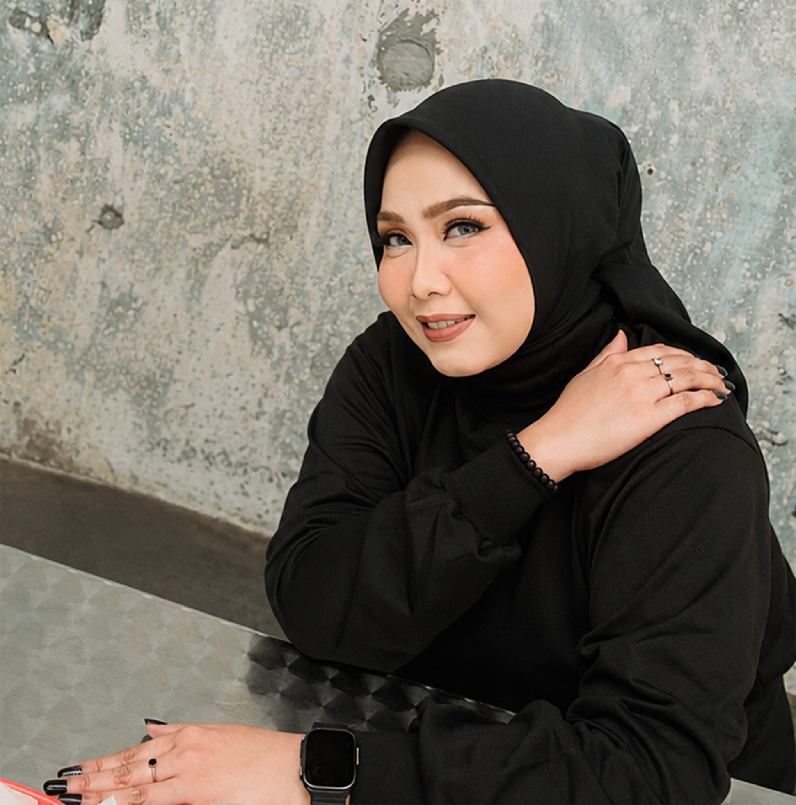
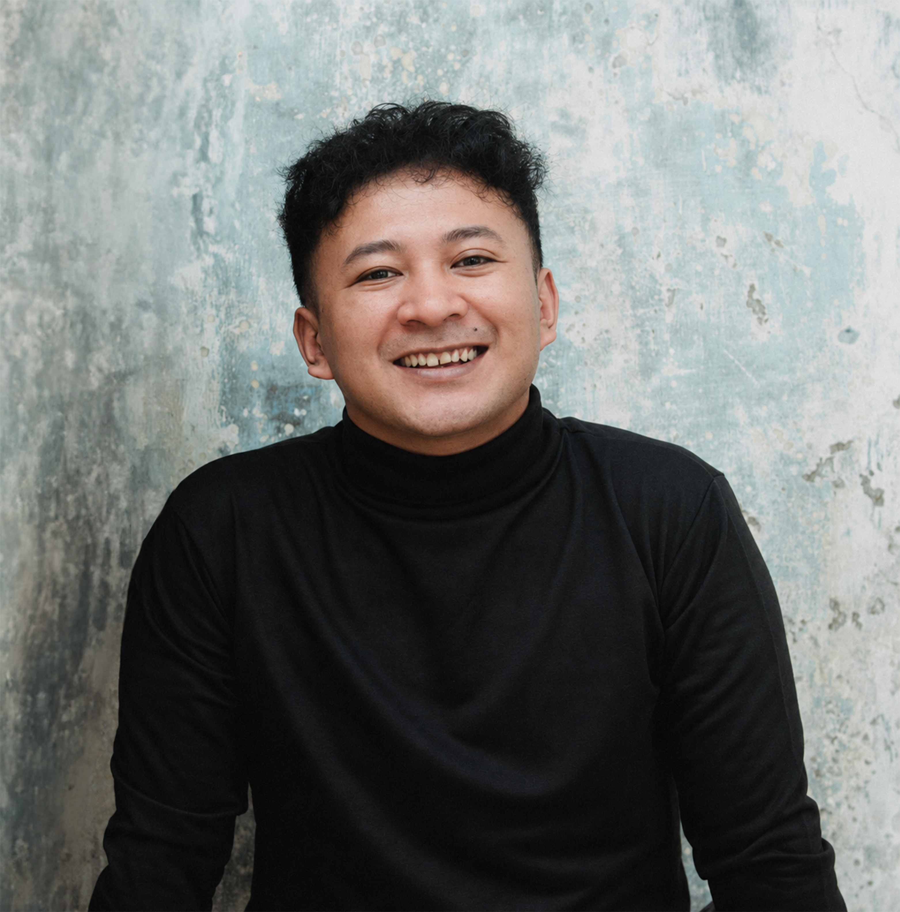
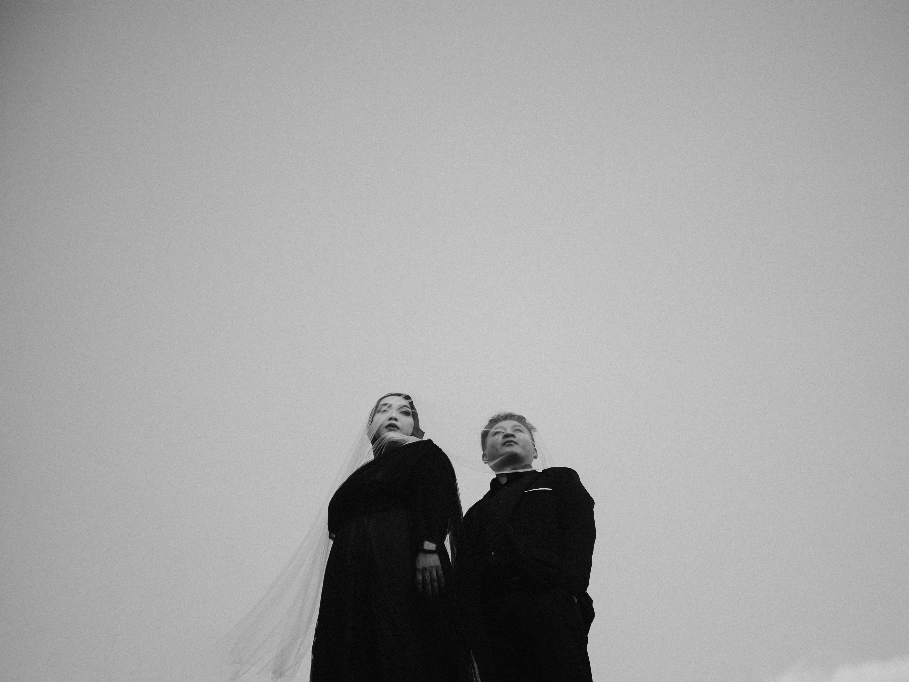

Virgina Agnes
Putri ke-2 Bpk. Dadi Wihardi (alm) & Ibu Neng Junariah

وَمِنْ اٰيٰتِهٖٓ اَنْ خَلَقَ لَكُمْ مِّنْ اَنْفُسِكُمْ اَزْوَاجًا لِّتَسْكُنُوْٓا اِلَيْهَا وَجَعَلَ بَيْنَكُمْ مَّوَدَّةً وَّرَحْمَةً ۗاِنَّ فِيْ ذٰلِكَ لَاٰيٰتٍ لِّقَوْمٍ يَّتَفَكَّرُوْنَ
Di antara tanda-tanda (kebesaran)-Nya ialah bahwa Dia menciptakan pasangan-pasangan untukmu dari (jenis) dirimu sendiri agar kamu merasa tenteram kepadanya. Dia menjadikan di antaramu rasa cinta dan kasih sayang. Sesungguhnya pada yang demikian itu benar-benar terdapat tanda-tanda (kebesaran Allah) bagi kaum yang berpikir.
Ar-Rum 21بِسْمِ اللَّهِ الرَّحْمَنِ الرَّحِيم
Kami mohon do’a & restunya atas pernikahan kami
Putri ke-2 Bpk. Dadi Wihardi (alm) & Ibu Neng Junariah


Putra ke-1 Bpk. Sabur Sopyan (alm) & Ibu Neneng Safitri (alm)
Acara
Kami bermaksud untuk mengundang saudara/i dalam acara pernikahan kami pada:
Akad Nikah
Jl. Galuh Mas Raya No.1, Sukaharja, Telukjambe Timur, Karawang.
Resepsi
Jl. Galuh Mas Raya No.1, Sukaharja, Telukjambe Timur, Karawang.
⌖ Navigasi MapGaleri

Lokasi
Jl. Galuh Mas Raya No.1, Sukaharja, Telukjambe Timur, Karawang.
⌖ Navigasi MapGift
Doa restu Anda merupakan karunia yang sangat berarti bagi kami.